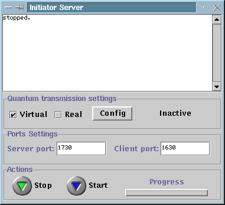

Initiator Server
The initiator server is a process responsible for
providing to the initiator player
a connection to the quantum channel. The quantum channel can be real or
virtual. In the case of a virtual quantum transmission, the initiator server
simulates a quantum channel by communicating classically with the responder
server (through an IP connection). When the quantum communication is
real, the initiator server connects also to the quantum channel. This is
through a normal IP connection to the so-called quantum
data grabber. Typically, the initiator server runs on the same machine
than the initiator player. When run, the initiator server looks as
follow:

The top window shows information to the user as the server
is running. In addition, the initiator server window contains the following
items gathered in 3 groups:
Quantum transmission settings:
-
Virtual vs Real checkboxes indicate whether
or not the next quantum transmission is through a simulated quantum channel
or through the real experiment.
-
The Config button allows the configuration of both
the virtual and real quantum transmission modes. The button acts differently
given the selected mode:
-
Virtual Configuration: allows to define the
error-rate for the next virtual quantum transmission. A transmitted virtual
qubit willl be flipped with the selected probability before it reaches
the responder's side.
-
Real Configuration: allows to select the IP
address and the port number for the connection to the quantum channel through
an entity call the quantum data grabber.
It also allows to select the bucket size which is the number of
pulses collected by the quantum channel before sending back their values
to the initiator server. Since most of the pulses are empty, selecting
larger bucket sizes increases the transmission speed. When a bucket
has been obtained then the non-empty pulses in that bucket are sent back
to the initiator player all at once.
-
The right-label indicates the type of quantum transmission
to be used. Actually supported are:
Ports Settings:
-
The Server Port is the port number at which the initiator
server waits for a connection with the responder
server.
-
The Client Port is the port number at which the initiator
server waits for a connection with the initiator
player.
Actions:
-
The start/stop button are used to start or to stop
the server. For the time being, for each quantum transmission the initiator
server must be restarted. After each transmission, the server stops. If
the stop button is pressed while the server is running then the execution
is aborted. The initiator server must be started before the responder
server and the initiator player.
-
The progress bar indicates the progress during quantum
transmission.
Security Issues:
The connection between the initiator
server and the initiator player must be private
in order for the quantum protocol to be implemented securely. This can
be achieved by running both the initiator server and the initiator player
on the same machine.
The connection between the initiator
server and the responder server does not
need to be private but should be authenticated. Authentication is
not provided by the current implementation.
{kind=link}